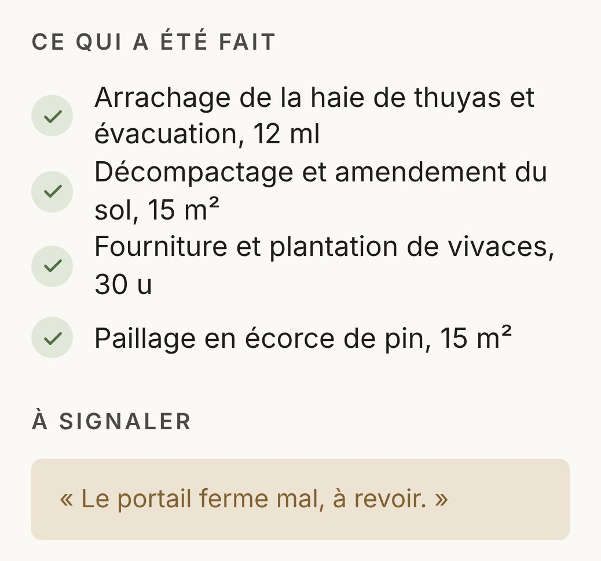
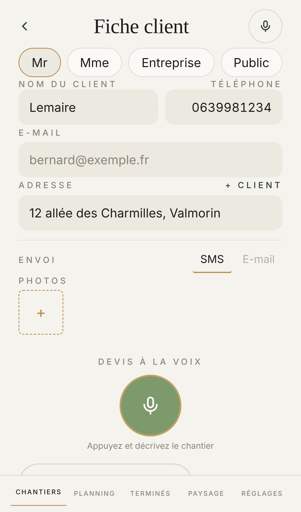
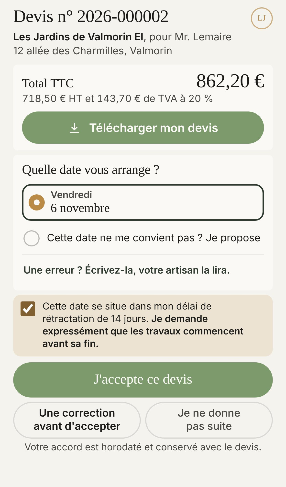
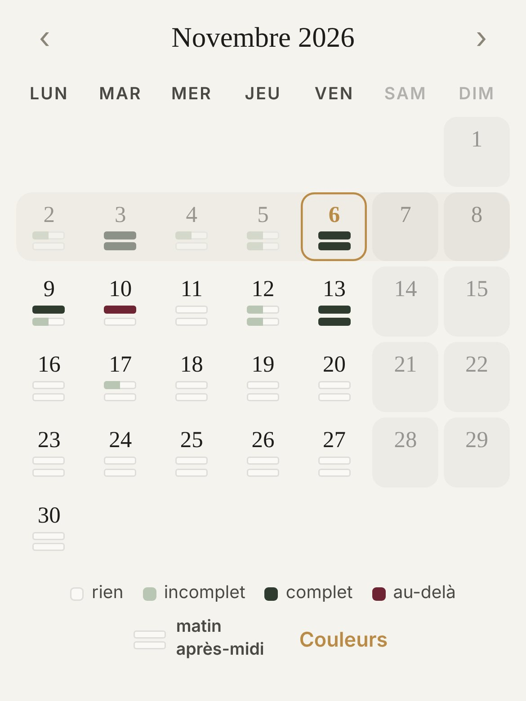
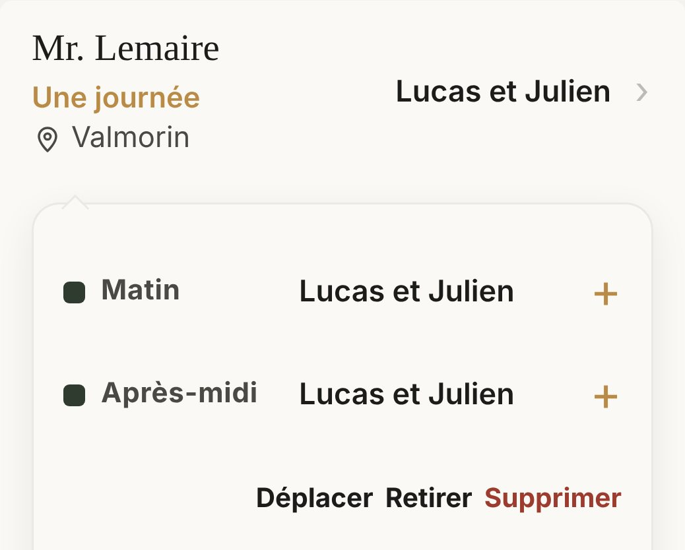
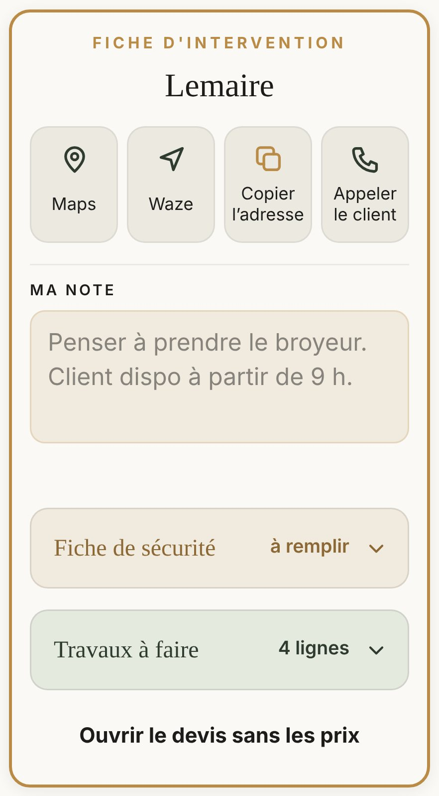
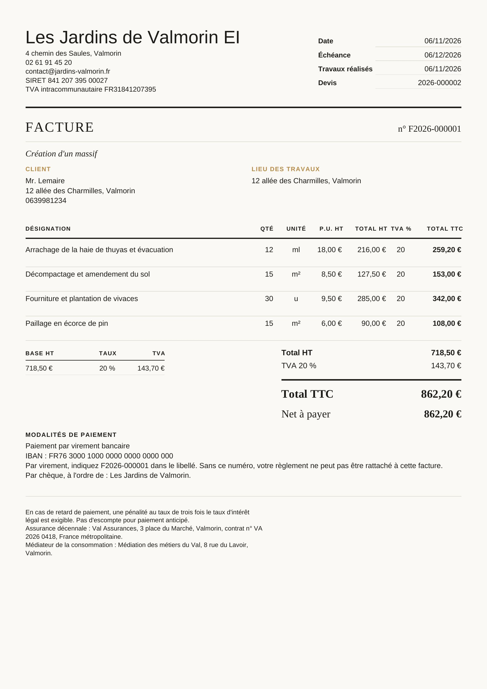
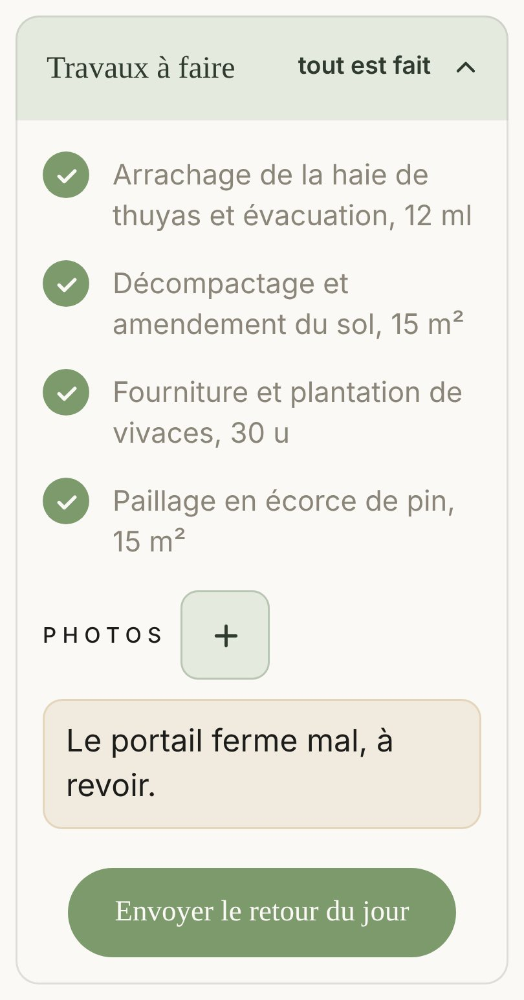

Le retour du soir
Ce que l'équipe a fait, coché le soir même.

Vous dictez le chantier. Atlas écrit le devis. Votre client accepte sur son téléphone.
Sans carte bancaire. Tout est ouvert pendant l'essai.
Atlas s'en occupe. Vous restez sur le chantier.
Vous décrivez le chantier sur place, à voix haute. Atlas écrit le devis.
« On arrache l'ancienne haie de thuyas sur douze mètres. »
Sur le devis, cela devient :
Arrachage de la haie de thuyas et évacuation12 ml18,00 €216,00 € HT

Le devis, prêt à partir.
Le client choisit sa date et accepte depuis son téléphone.
Son accord est horodaté et conservé avec le devis.

Le mois d'un coup d'œil : plein, à moitié, trop chargé.


L'équipe se pose à la demi-journée.

Le jour J, tout tient sur la fiche.
La facture reprend le devis, ligne pour ligne.

Ce que l'équipe a fait, coché le soir même.

Sur place, tâche par tâche.

Rien ne part chez le client sans votre accord. Chaque ligne se corrige à la main, et quand une information manque, Atlas la laisse vide et vous la demande plutôt que de l'inventer.
Les mots du métier, l'équipe posée à la demi-journée, les retours d'intervention. Pas un logiciel de devis générique.
Le nom de l'entreprise, sa forme, votre régime de TVA. Une question à la fois. Votre logo s'ajoute ensuite.
Importez votre liste depuis Excel, ou remplissez-les au fil de vos premiers devis.
Ouvrez la fiche du client, appuyez sur le micro, et décrivez le chantier.
Sans engagement. Vous arrêtez quand vous voulez, à la fin de la période en cours.
Seules comptent les personnes qui font les devis et les factures. Vos salariés ne comptent jamais.
Du devis dicté à la facture, sans rien retaper.
39 € HT par mois
Tout Atlas, jusqu'à cinq personnes qui facturent.
59 € HT par mois
Toute votre équipe sur Atlas.
159 € HT par mois
L'essai ouvre tout, sans carte bancaire. Vous choisissez votre formule après.
Non. Les boutons sont grands, les mots sont ceux du métier. Atlas est fait pour être utilisé debout, d'une main, en plein soleil.
Sur votre téléphone et sur votre ordinateur, dans le navigateur. Il s'ajoute à l'écran d'accueil comme une application.
Vous le voyez avant le client. Rien n'est envoyé, validé ou facturé sans votre geste, et chaque ligne se corrige à la main.
Ouvrez Atlas dans Chrome ou Edge et installez-le : il s'ouvre dans sa propre fenêtre, avec son icône sur le bureau, comme un logiciel. Même compte que sur le téléphone.
Téléchargez le devis en PDF : vous l'imprimez et vous le lui donnez, ou vous l'envoyez par e-mail.
Le papier porte vos numéros, la TVA et, pour un particulier, le formulaire de rétractation. S'il manque votre assurance décennale ou votre médiateur, Atlas vous le rappelle.
Non. Ils reçoivent un lien par SMS ou par e-mail, choisissent leur date et acceptent depuis leur téléphone.
Chaque entreprise est isolée des autres au niveau de la base de données elle-même. Vos clients, vos prix et vos chantiers ne sont visibles que par votre équipe.
Rien n'est prélevé tout seul. Vous choisissez une formule, ou Atlas passe en lecture seule : vos devis et vos factures restent consultables.
Vous téléchargez toutes vos données quand vous voulez, vos devis et vos factures en PDF compris.
Elle arrive. Vous pourrez relier votre compte de facture électronique à Atlas, et vos factures partiront par lui.
Sans carte bancaire. Sans engagement.
Une question avant d'essayer ? On vous répond.